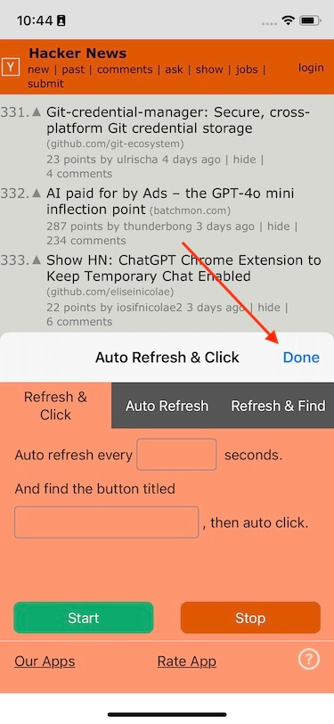

Please have a look at this: How to use "Auto Refresh & Clicker"
• Chrome or Edge on iPhone and iPad cannot install extensions, you need to use Safari.
• There is a Safari version of this extension. Search “Auto Refresh & Clicker” in App Store, or find it here Auto Refresh & Clicker, pay $2.99 to get it, then you can use it on your iOS and macOS devices.
• The countdown only starts once the page finishes loading. If the website is slow to load (e.g., 15s), the app must wait for it to finish before starting the timer.
• It's a built-in Chrome browser security feature. Google intentionally blocks all extensions from running on sensitive pages like "chrome://settings" and "https://chromewebstore.google.com".
• This might be a Safari issue on some iOS versions. You can try quitting and restarting Safari, and then relaunch the Extension.
• After clicking "Start", you can click "OK" or "Done" on the upper right to minimize the extension, and then you should be able to see the progress bar while the page refreshes.
• Remember to click the "Stop" button after the task is completed, otherwise the extension will keep running.
• Due to the iOS system limitations, Safari Extensions can only run for a very short time in background mode.
• It is recommended that you run it in the foreground for best results. You can set your iPhone screen to stay on while the Safari Extension is open, so that it can run continuously.
• Maybe the extension is still running, but it's just not visible in the UI. You can try clicking the "Stop" button and then the "Start" button, the extension will re-run.
• In the iPhone's Safari browser, the height of the extension is fixed by the iOS system.
• But, you can click the "OK" or "Done" button as shown in the picture below and the extension will minimize and continue running.
• It may be a problem with the App Store cache. Wait a while and then open the Mac App Store again and it may be normal.
1. Input the time intervals and keywords;
2. Click "Start";
3. If you want to "Refresh & Click" with other intervals and keywords, click "Stop", then repeat step 1 and 2.